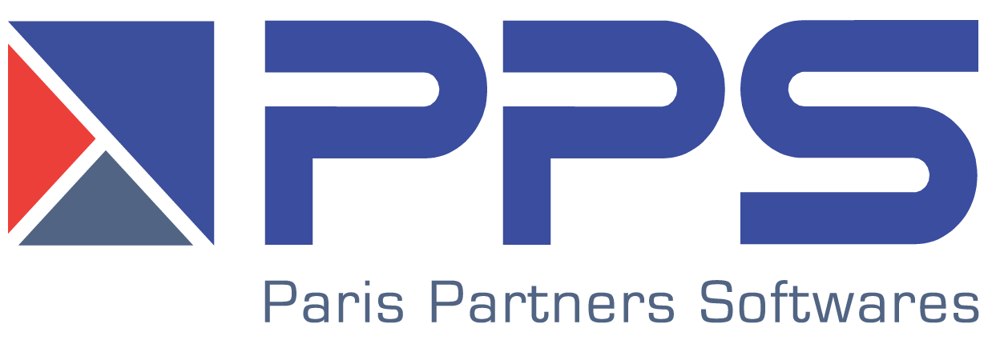

Mar 2025 - Sep 2025

Research Intern, AI/ML Engineer
Paris Partners Softwares, Innovation Department
Researched AI-assisted penetration testing for web applications, benchmarked vulnerability detection tools, and designed internal security testing workflows.